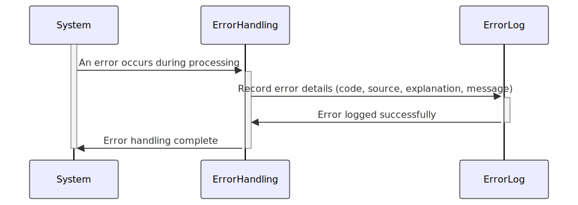

Gerado em: 1º de outubro de 2024
Título do Documento: Especificação de Registro de Erros do Sistema de Cartões
Descrição Resumida:
Esta especificação define um formato padronizado para registrar erros dentro do Sistema de Cartões. Ele garante relatórios de erros consistentes, simplifica o diagnóstico de problemas e contribui para a estabilidade geral do sistema. Quando ocorre um erro, o sistema captura detalhes importantes, incluindo um código de erro, o programa de origem, uma explicação detalhada e uma mensagem geral.
Histórias do Usuário:
Como um administrador do sistema, preciso de uma maneira padronizada de entender os erros do sistema para que eu possa identificar e resolver rapidamente os problemas que afetam o Sistema de Cartões.
Épico Relacionado:
9 - Utilitários do Sistema
Requisitos Funcionais:
- Captura de Erro: O sistema deve capturar as seguintes informações quando ocorrer um erro:
- Código de Erro (ABEND-CODE): Um código de 4 caracteres categorizando o tipo de erro (por exemplo, “DBER” para Erro de Banco de Dados, “CNVL” para Erro de Conversão).
- Programa de Origem (ABEND-CULPRIT): O nome do programa ou módulo onde o erro se originou (por exemplo, “COACTUPC”, “CBTRN01C”).
- Explicação do Erro (ABEND-REASON): Uma explicação concisa da causa do erro (por exemplo, “Número de conta inválido”, “Arquivo não encontrado”).
- Mensagem Geral (ABEND-MSG): Uma mensagem amigável associada ao erro (por exemplo, “Ocorreu um erro durante o processamento da transação. Por favor, tente novamente mais tarde.”).
Requisitos Não Funcionais:
- Desempenho: O registro de erros deve ter impacto mínimo no desempenho geral do sistema.
- Confiabilidade: O mecanismo de registro de erros deve ser confiável, garantindo que todos os erros sejam capturados e registrados sem falhas.
- Manutenibilidade: O código de registro de erros e as estruturas de dados devem ser facilmente mantidos e extensíveis para acomodar mudanças futuras.
Critérios de Aceitação:
- Informações Completas do Erro: Todas as entradas do log de erros devem conter as informações necessárias: Código do Erro, Programa de Origem, Explicação do Erro e Mensagem Geral.
- Relato de Erro Preciso: As informações registradas devem refletir com precisão a natureza e a origem do erro.
- Registro Oportuno: Os erros devem ser registrados imediatamente após a detecção para fornecer uma visão em tempo real da saúde do sistema.
Melhorias de Código:
- Tratamento de Erros Centralizado: Implemente uma rotina centralizada de tratamento de erros para garantir consistência e reduzir a duplicação de código.
- Padronização do Código de Erro: Defina um conjunto abrangente e padronizado de códigos de erro para facilitar a análise e o relatório.
- Níveis de Registro: Introduza diferentes níveis de registro (por exemplo, DEBUG, INFO, ERROR, FATAL) para controlar a verbosidade dos logs.
Melhorias de Segurança:
- Armazenamento Seguro de Logs: Armazene logs de erros com segurança para impedir acesso não autorizado e modificação.
- Monitoramento e Auditoria de Logs: Implemente mecanismos para monitorar logs de erros para atividades suspeitas e gerar trilhas de auditoria.
- Minimização de Dados: Evite registrar informações confidenciais, como dados do cliente ou senhas, em logs de erros.
Diagrama Conceitual:

–Made by “Smart Engineering” (by Compass.UOL)–